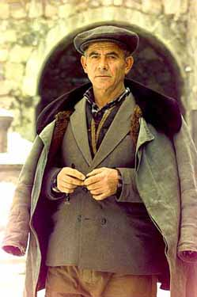

Antrasiagan ar,avaqovmp
1. Cdir {oryk,ap;i5 Hogdympyr 30, 1996;ovaganu gro. "Reconnaissance Notes from Central Asia" ¥yrgraqovzagan n0;yr gytronagan Asia3en» 30tova/u1 O|w er ar,avaqovmpu gazmagyrbo.u1 I|n[ yn Irina3i amynasira/ marzanku5 qovmpu yv qa.xo.u1
GlobaLearnu ar,avnyr gu gazmagyrbe a,qari dara/kin1 Masnagxo. a,agyrdnyru a-i; g\ovnynan hy-avor ,r]annyrov me] cdnovo. ar,avaqovmpyrovn hyd gab hasdadylov5 iryx Web6i e]in ,norhiv1 Ivrakan[ivr ga3ani me]5 dy.axi a,agyrd mu gu hivrungale ar,avaqovmpu5 or hama3nku gu nyrga3axne qovmpin1
Irinan dy.axi hivrn er Ha3asdani me]1 An ,ad gu sire baske;bol yv ir amynasira/ qa.axo.u <ikag0 8Bovlz9i Denis _admunn e1 Aha Irina3I ngaru`
 |
2. Grna|s cdnyl "Armenian Man - One of the Caretakers of the Church at Geghard" ¥Ha3 mart` Cy.art ygy.yxii hocadarnyren megu» anovnu gro. ngaru5 Antrasiagan Ar,avaqovmpin e]in me]1
Badgyru garyli e cdnyl a3s
hasxeow`
http://www.globalearn.org/expedition/
journals/drew/jrn970224-yerevan-drew.html
|  |
3. Ar,avaqovmpin 0racrov;yan hama2a3n5 i|n[ er "ydrovar 24, 1997i dy.agan meg ;yr;in qoraciru1
8Yrcahan Gosdan;in Bydrosyan Yrgov Dari Ydk Gu Wyrata-na3 _od A3lund5 Miaxyal Nahncnyren91
4. Cy.arti masin a3l dy.ygov;ivnnyr cdnylov hamar a3l URL hasxenyrov bedk ovnink1
Aha Cy.arti masin Web-i e]yrov hasxenyr`
http://www.rpi.edu/~keefej/Geg.html
http://www.armeniaemb.org/monast/geghard.htm
http://wotan.wiwi.hu-berlin.de/~houssik/ Window/keghard.html
(Wyratar2i4r n,ylow A7 @y-nargi n,anu)